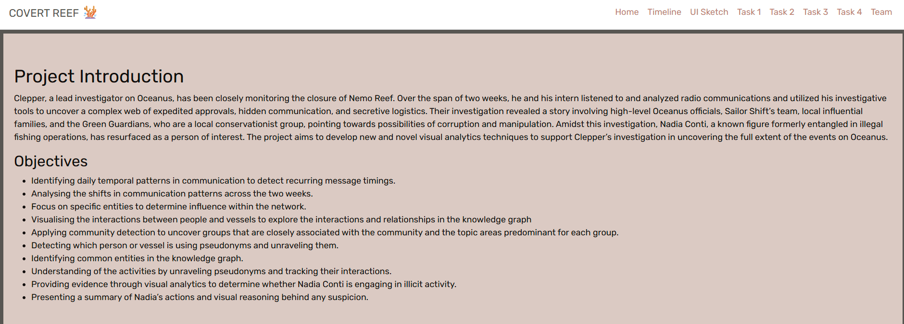
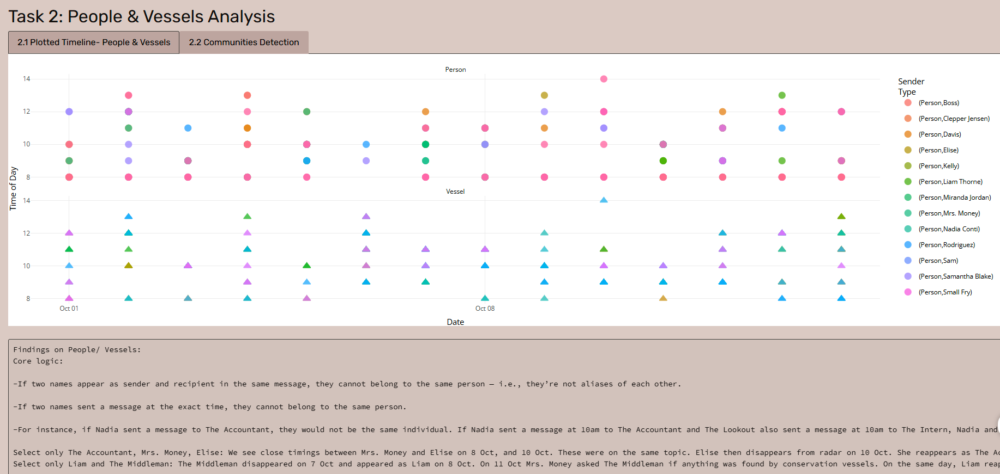

Take-home Exercise 3: Prototyping Modules for Visual Analytics Shiny Application
Storyboard
Section 1: Design for UI theme +Navbar
There will split the section into : Homepage about project introduction, Project timeline, the hand draw UI sketch, Task 1, Task 2, Task 3 , Task 4 and Team member.
# Home Section tags$section(id="home", fluidRow(column(12,h1("Project Introduction"),p("Clepper, a lead investigator on Oceanus, has been closely monitoring the closure of Nemo Reef. Over the span of two weeks, he and his intern listened to and analyzed radio communications and utilized his investigative tools to uncover a complex web of expedited approvals, hidden communication, and secretive logistics. Their investigation revealed a story involving high-level Oceanus officials, Sailor Shift’s team, local influential families, and the Green Guardians, who are a local conservationist group, pointing towards possibilities of corruption and manipulation. Amidst this investigation, Nadia Conti, a known figure formerly entangled in illegal fishing operations, has resurfaced as a person of interest. The project aims to develop new and novel visual analytics techniques to support Clepper’s investigation in uncovering the full extent of the events on Oceanus."),h3("Objectives"), tags$ul( tags$li("Identifying daily temporal patterns in communication to detect recurring message timings."), tags$li("Analysing the shifts in communication patterns across the two weeks."), tags$li("Focus on specific entities to determine influence within the network."), tags$li("Visualising the interactions between people and vessels to explore the interactions and relationships in the knowledge graph"), tags$li("Applying community detection to uncover groups that are closely associated with the community and the topic areas predominant for each group."), tags$li("Detecting which person or vessel is using pseudonyms and unraveling them."), tags$li("Identifying common entities in the knowledge graph."), tags$li("Understanding of the activities by unraveling pseudonyms and tracking their interactions."), tags$li("Providing evidence through visual analytics to determine whether Nadia Conti is engaging in illicit activity."), tags$li("Presenting a summary of Nadia’s actions and visual reasoning behind any suspicion.") ) )))

Section 3: Project Timeline
Show the code
#-------UI-------# Timeline Section tags$section(id="timeline", fluidRow(column(12,h2("Project Timeline"),plotOutput("timeline_plot", height="400px") )))#-----server----server <-function(input, output, session) {# --- Project Timeline --- output$timeline_plot <-renderPlot({ data <-read.csv(text ="event,group,start,end,color,Project Proposal,2025-06-02,2025-06-08,#a5d6a7,Exploratory data analysis,2025-05-20,2025-06-08,#a5d6a7,Exploratory data analysis,2025-06-08,2025-06-09,#DD4B39,R Quarto/ Netlify,2025-05-20,2025-06-08,#a5d6a7,R Quarto/ Netlify,2025-06-08,2025-06-30,#DD4B39,R Shiny App,2025-06-15,2025-07-06,#DD4B39,Poster,2025-06-23,2025-06-26,#DD4B39,User Guide,2025-06-15,2025-06-26,#DD4B39", stringsAsFactors =FALSE) data <- data %>%mutate(start =as.POSIXct(start),end =as.POSIXct(end),color =recode(color,`#a5d6a7`="#8979BF",`#DD4B39`="#B0BF79") )gg_vistime(data) +geom_vline(xintercept =as.numeric(as.POSIXct("2025-06-08")), color ="red") +scale_x_datetime(date_breaks ="3 days", date_labels ="%d %b") +theme_minimal(base_family ="Rubik") +theme(axis.text.x =element_text(angle =45, hjust =1)) }, bg ="transparent", res =96) }
#--------UI---------# — Task 2 — tags$section(id="task2", fluidRow(column(12,h2("Task 2: People & Vessels Analysis"),tabsetPanel(id="task2_tabs", type="tabs",tabPanel("2.1 Plotted Timeline- People & Vessels",plotlyOutput("pv_timeline", height="500px"),br(), verbatimTextOutput("task2a_findings") ),# inside your tabsetPanel(id="task2_tabs", type="tabs", …)tabPanel("2.2 Communities Detection",# 1) Community Detection (static)fluidRow(column(12, h4(" Community Detection – People & Vessels")),column(12, plotOutput("comm_graph", height ="450px")) ),# 2) PageRank PageRank bar + networkfluidRow(column(6,h4("PageRank Centrality (Top 10 Nodes)"),plotOutput("pr_bar", height ="350px") ),column(6,h4("PageRank‐Sized Network"),plotOutput("pr_graph", height ="350px") ) ),h5(" Findings"),verbatimTextOutput("task2b_pr_findings"),# 4) Membership summary (white background)fluidRow(column(12, h4("Community Group Membership – Top 5")),column(12,div(style="background:white; padding:8px;",tableOutput("comm_membership") ) ) ),# 5) Interactive community timelinefluidRow(column(12, h4("Plotted Community Timeline")),column(12, plotlyOutput("comm_timeline", height ="450px")) ),# 6) Discussionh5("Discussion / Interpretation"),verbatimTextOutput("task2b_discussion") ) ) )))#--------Server---------# ---- Task 2 prep ---- g_undir <-as_undirected(g_ig, mode="collapse") comm_obj <-reactive({ cluster_walktrap(g_undir) })# Shared timeline reactive entity_meta <- nodes_tbl %>%filter(type=="Entity") %>%transmute(id,name,sub_type) timeline_df <-reactive({ msgs %>%left_join(entity_meta, by=c("sender"="id")) %>%filter(sub_type %in%c("Person","Vessel")) %>%mutate(Type=sub_type) })# 2.a Interactive Timeline output$pv_timeline <-renderPlotly({ df <-timeline_df() p <-ggplot(df,aes(date, hour,color = name,shape = Type,text =paste(name, Type, hour))) +geom_point(size=3, alpha=0.8) +facet_wrap(~Type, ncol=1) +scale_shape_manual(values=c(Person=16, Vessel=17)) +labs(x="Date", y="Time of Day", color="Sender") +theme_minimal()ggplotly(p, tooltip="text") }) output$task2a_findings <-renderText({"Findings on People/ Vessels:Core logic:-If two names appear as sender and recipient in the same message, they cannot belong to the same person — i.e., they’re not aliases of each other.-If two names sent a message at the exact time, they cannot belong to the same person.-For instance, if Nadia sent a message to The Accountant, they would not be the same individual. If Nadia sent a message at 10am to The Accountant and The Lookout also sent a message at 10am to The Intern, Nadia and The Lookout cannot be the same person.Select only The Accountant, Mrs. Money, Elise: We see close timings between Mrs. Money and Elise on 8 Oct, and 10 Oct. These were on the same topic. Elise then disappears from radar on 10 Oct. She reappears as The Accountant and Mrs. Money on 11 Oct on the same topic and remains only as The Accountant till 14 Oct.Select only Liam and The Middleman: The Middleman disappeared on 7 Oct and appeared as Liam on 8 Oct. On 11 Oct Mrs. Money asked The Middleman if anything was found by conservation vessels. On the same day, Liam reappeared and replied Elise that nothing was found by them.Select only The Boss and Nadia: The Boss disappeared on 5 Oct and reappeared as Nadia on 8 Oct. Likely the same person.Select only Small Fry and Rodriguez: on 2 Oct Rodriguez corresponded with Remora and Mako on meeting at the slip #14. It happened again on 14 Oct as he took on dual roles and responded to the same message with different names. Likely the same person.Select only The Lookout and Sam: on 7 Oct Sam asked Kelly to get information on who authorized the permit. 2 minutes later, The Lookout (Kelly) responded to The Intern (Sam), that it was signed by Jensen from City Council.Seawatch only appeared on 10 Oct but Horizon talked to Seawatch on 8 Oct. Therefore, some other entity is Seawatch before or during 8 Oct. Defender told Seawatch on 3 Oct at 8.39am that it increased its patrol and informed Seawatch to maintain vigilance. The Lookout (Seawatch) responded to Sentinel (Defender) at 8.41am that it acknowledged the need for vigilance. " })# 2.b Static Community Detection output$comm_net_static <-renderPlot({ mem <-membership(comm_obj())ggraph(g_undir, layout="kk") +geom_edge_link(color="grey80", alpha=0.5) +geom_node_point(aes(color=factor(mem[name])), size=4) +geom_node_text(aes(label=name, color=factor(mem[name])),repel=TRUE, size=3) +scale_color_manual(values=c("1"="#E41A1C","2"="#377EB8","3"="#4DAF4A","4"="#984EA3","5"="#FF7F00")) +labs(color="Community") +theme_void() })# --- Before these outputs, define a shared reactive timeline_df() --- timeline_df <-reactive({ msgs %>%left_join( nodes_tbl %>%filter(type=="Entity") %>%transmute(id,name,sub_type),by =c("sender"="id") ) %>%filter(sub_type %in%c("Person","Vessel")) %>%mutate(Type = sub_type) })# 1) Static community‐detection plot output$comm_graph <-renderPlot({ com <-cluster_louvain(as.undirected(g_ig, mode="collapse")) mem <-membership(com)ggraph(as.undirected(g_ig,mode="collapse"), layout="kk") +geom_edge_link(color="grey80", alpha=0.5) +geom_node_point(aes(color=factor(mem[name])), size=4) +geom_node_text(aes(label=name, color=factor(mem[name])),repel=TRUE, size=3) +scale_color_manual(values=c("1"="#E41A1C","2"="#377EB8","3"="#4DAF4A","4"="#984EA3","5"="#FF7F00")) +theme_void() })# precompute PageRank pr_vals <-page_rank(as.undirected(g_ig,mode="collapse"))$vector# 2a) Bar chart of top PageRank nodes output$pr_bar <-renderPlot({ pr_df <-tibble(name =V(g_ig)$name,pagerank = pr_vals ) %>%arrange(desc(pagerank)) %>%slice_head(n=10)ggplot(pr_df, aes(reorder(name, pagerank), pagerank)) +geom_col(fill="#377EB8") +coord_flip() +labs(x="Node", y="PageRank", title="Top 10 by PageRank") +theme_minimal(base_size=12) })# 2b) Static network sized by PageRank output$pr_graph <-renderPlot({ mem <-membership(cluster_louvain(as.undirected(g_ig,mode="collapse")))ggraph(as.undirected(g_ig,mode="collapse"), layout="kk") +geom_edge_link(color="grey80", alpha=0.5) +geom_node_point(aes(size=pr_vals, color=factor(mem[name])), show.legend="point") +geom_node_text(aes(label=name, color=factor(mem[name])),repel=TRUE, size=3) +scale_size(range=c(2,8), name="PageRank") +scale_color_manual(values=c("1"="#E41A1C","2"="#377EB8","3"="#4DAF4A","4"="#984EA3","5"="#FF7F00")) +theme_void() })# 3) Findings for PageRank step output$task2b_pr_findings <-renderText({"Findings:- There were 5 closely associated groups. Community 5 (Clepper and Miranda) appeared to be segmented from the central group, due to the non-involvement from the nature of their investigative work.From the graph, we extracted the 8 influential nodes to focus on:Community 1: MakoCommunity 2: Neptune, Remora, Nadia, DavisCommunity 3: N/A as they were not very influential at global levelCommunity 4: Mrs. Money, Boss, The MiddlemanCommunity 5: N/A as they were not very influential at global levelCommunity 6: N/A as they were not very influential at global level" })# 4) Membership & top topics (top 5 groups) output$comm_membership <-renderTable({ com <-cluster_louvain(as.undirected(g_ig,mode="collapse")) mem <-membership(com)# build membership + topics as before mem_df <-tibble(name=names(mem), community=mem) part <- edges_tbl %>%filter(type %in%c("sent","received")) %>%mutate(entity =ifelse(type=="sent", source, target),event =ifelse(type=="sent", target, source)) %>%select(entity, event) about <- edges_tbl %>%filter(type=="about") %>%transmute(event=source, topic=target) topics <- nodes_tbl %>%filter(type=="Topic") %>%transmute(id, topic_name=name) joined <- part %>%inner_join(about, by="event") %>%inner_join(topics, by=c("topic"="id")) %>%left_join(mem_df, by=c("entity"="name")) top_topics <- joined %>%count(community, topic_name, name="n") %>%group_by(community) %>%slice_max(n, n=3) %>%summarise(predominant =paste(topic_name, collapse=", ")) members <- mem_df %>%group_by(community) %>%summarise(Members=paste(name, collapse=", ")) out <- members %>%left_join(top_topics, by="community") %>%rename(Group=community) %>%arrange(Group) %>%slice_head(n=5) out }, bordered=TRUE, spacing="xs")# 6) Interactive community timeline output$comm_timeline <-renderPlotly({# reuse timeline_df() defined above Task 2.a df <-timeline_df() %>%left_join(tibble(name=names(membership(cluster_louvain(as.undirected(g_ig,mode="collapse")))),community=membership(cluster_louvain(as.undirected(g_ig,mode="collapse")))),by="name") p <-ggplot(df, aes(date, hour, color=factor(community), shape=Type,text=paste(name, "Grp", community, hour))) +geom_point(size=3, alpha=0.8) +facet_wrap(~Type, ncol=1) +scale_shape_manual(values=c(Person=16, Vessel=17)) +labs(x="Date", y="Time of Day", color="Community") +theme_minimal()ggplotly(p, tooltip="text") })# 7) Discussion / Interpretation output$task2b_discussion <-renderText({"Discussion:We mainly focused on the conversations by 8 influential nodes and some related nodes:Conservation Group (Comm.1): Samantha Blake informed Mako to stop operations on 8 and 10th Oct. Serenity is a private luxury yacht. Osprey was likely a tourism vessel looking for charter from Mako for their tourists.Permit (Comm. 2): Neptune, Remora, Nadia, and Davis were working on Nemo Reef operation. This referred to the Music Video Production for Sailor Shift on 14 Oct.Pseudonym (Comm. 3): Other than communicating among themselves, The Lookout appeared to have also externally corresponded with Sentinel, Reef Guardian and Horizon (conservation based topics), while The Intern also externally corresponded with Mrs. Money.Suspicious (Comm. 4): The Middleman had access to Council documents. Mrs. Money had funding from sources that would not flag out to regulators for her operations. Mrs. Money was investigating V. Miesel’s structures. On 5 Oct, Boss told Mrs. Money to disguise financial trails through tourism ventures and destroy evidence of Nemo Reef operations.Hacklee Herald (Comm. 5): Conversations between Clepper and his intern Miranda which ended on 11 Oct. Miranda mentioned an Oceanus City Council Member meeting with unmarked vessels at night." })

Section 7:Task 3 Pseudonym Identification
Show the code
#-------------UI------------------# — Task 3: Pseudonym Identification — tags$section(id="task3", fluidRow(column(12,h2("Task 3: Pseudonym Identification"),tabsetPanel(id="task3_tabs", type="tabs",# 3.1: Rules & TabletabPanel("3.1 Rules & Table",h4("Rules to identify pseudonyms:"), tags$ul( tags$li("Names starting with “The ” are likely pseudonyms."), tags$li("Names containing keywords: Boss, Accountant, Middleman, Lookout, Intern, Money, Fry.") ),tableOutput("pseudo_table") ),# 3.2: Pseudonym NetworktabPanel("3.2 Pseudonym Network",visNetworkOutput("pseudonym_net", height ="500px") ),# 3.3: ConclusiontabPanel("3.3 Conclusion",verbatimTextOutput("task3_conclusion") ) ) ) ))#-----server--------# 3.1 Build the pseudo table nodes_person <- nodes_tbl %>%filter(sub_type =="Person") %>%transmute(id, label = name, sub_type) pseudonym_keywords <-c("Boss", "Accountant", "Middleman", "Lookout","Intern", "Money", "Fry") pseudo_df <- nodes_person %>%mutate(is_prefix =str_detect(label, "^The "),is_keyword =str_detect(label, paste(pseudonym_keywords, collapse ="|")),is_pseudonym = is_prefix | is_keyword ) %>%filter(is_pseudonym) %>%select(id, label, sub_type) output$pseudo_table <-renderTable({ pseudo_df }, striped =TRUE, bordered =TRUE)# 3.2 Build & render the pseudonym-only communication network pseudo_labels <- pseudo_df$label pv_nodes <-data.frame(id = pseudo_labels, label = pseudo_labels) pv_edges <- msgs %>%# attach sender labelleft_join(nodes_tbl %>%transmute(id, label = name),by =c("sender"="id")) %>%rename(from = label) %>%# attach receiver labelleft_join(nodes_tbl %>%transmute(id, label = name),by =c("receiver"="id")) %>%rename(to = label) %>%filter(from %in% pseudo_labels, to %in% pseudo_labels) %>%distinct(from, to) output$pseudonym_net <-renderVisNetwork({visNetwork(pv_nodes, pv_edges) %>%visIgraphLayout(layout ="layout_with_fr") %>%visOptions(highlightNearest =TRUE, nodesIdSelection =TRUE) })# 3.3 Conclusion output$task3_conclusion <-renderText({paste("→ Identified pseudonyms:",paste(pseudo_df$label, collapse =", "),"","With the explicit identification of pseudonyms such as “Boss,” “The Intern,” “The Accountant,” “Mrs. Money,” “The Middleman,” “The Lookout,” and “Small Fry,” my understanding of the activities within the Oceanus network changed significantly.","Initially, communications and relationships appeared to be fragmented among many individuals and vessels. However, after mapping pseudonyms onto the network, several important patterns emerged:","","-Pseudonyms as Key Hubs: In the visual network, the detected pseudonyms are not peripheral actors—they consistently occupy central hub positions, connecting to multiple vessels and people through various types of relationships (such as “Reports,” “Coordinates,” “Operates,” and “Suspicious”).","-Obscured True Roles: What previously looked like many unrelated participants was actually a small set of influential actors operating under multiple pseudonyms. For example, “The Intern” and “Boss” are both connected to several vessels via “Coordinates” and “Operates” relationships, indicating they may be orchestrating or managing operations behind the scenes.).","-Concealment of Illicit Activity: The structure revealed that pseudonyms are often used to mask direct links between real individuals and vessels—particularly in suspicious or high-frequency communication events. This suggests intentional obfuscation, possibly to hide illicit coordination or the flow of sensitive information.)","-Redefining Influence and Risk: By highlighting pseudonyms, it becomes clear that influence within the network is far more centralized than the real-name view suggested. A few pseudonyms control or interact with a large proportion of vessels and people, making them high-value targets for further investigation.",sep ="\n") })
The final UI link: https://roxyyanglu.shinyapps.io/Take-home_Ex03/
Show the code
library(shiny)library(visNetwork)library(ggraph)library(plotly)library(jsonlite)library(tidyverse)library(lubridate)library(igraph)library(vistime)library(bslib)library(scales)library(DT)library(stringr)library(ggplot2)# general HTTP downloadsoptions(timeout =max(600, getOption("timeout")))# rsconnect-specific network operationsoptions(rsconnect.http.timeout =120)# --------------------------------------------------# 1. DIY bslib theme# --------------------------------------------------theme_covert <-bs_theme(bg ="#585651",fg ="#090605",primary ="#ba9b8d",secondary ="#814a38",base_font =font_google("Rubik"),heading_font =font_google("Rubik"))# --------------------------------------------------# UI# --------------------------------------------------ui <-fluidPage(theme = theme_covert, tags$head( tags$style(HTML(" html, body { scroll-behavior: smooth; } .navbar-covert { background-color: #FFF; } .navbar-covert .nav-link { color: #c17e72 !important; font-weight: 500; } .navbar-covert .nav-link:hover { color: #DBCAC3 !important; } body { padding-top: 70px; } section { padding: 60px 20px; } /* web BG set for #DBCAC3 section */#home,#sketch,#task2,#task4 { background-color: #DBCAC3 !important;}/* web BG set for #ebe2de section */#timeline,#task1,#task3,#team { background-color: #ebe2de !important;} /* TabsetPanel */ .nav-tabs .nav-link { color: #000 !important; background-color: #bda59f !important; } .nav-tabs .nav-item.show .nav-link, .nav-tabs .nav-link.active { color: #000 !important; background-color: #bda59f !important; } /* Dropdown box color matching */ .form-control.shiny-bound-input, .selectize-control.single .selectize-input { background-color: #bda59f !important; color: #000 !important; border-color: #bda59f !important; } .selectize-dropdown { background-color: #bda59f !important; color: #000 !important; } /* dateRangeInput bg & text */ #date_range .form-control { background-color: #bda59f !important; color: #000 !important; border-color: #bda59f !important; } #date_range .input-group-text { background-color: #bda59f !important; color: #000 !important; border-color: #bda59f !important;page } ")) ),# Navbar tags$nav(class ="navbar navbar-expand-lg navbar-covert fixed-top", tags$div(class ="container-fluid", tags$a(class ="navbar-brand text-white", href ="#home", tags$span("COVERT REEF "), tags$span("\U0001FAB8", style ="font-size:24px;") ), tags$button(class ="navbar-toggler", type ="button",`data-bs-toggle`="collapse", `data-bs-target`="#menuCovert", tags$span(class ="navbar-toggler-icon") ), tags$div(class ="collapse navbar-collapse", id ="menuCovert", tags$ul(class ="navbar-nav ms-auto", tags$li(class ="nav-item", tags$a(class ="nav-link", href ="#home", "Home")), tags$li(class ="nav-item", tags$a(class ="nav-link", href ="#timeline","Timeline")), tags$li(class="nav-item", tags$a(class="nav-link", href="#sketch", "UI Sketch")), tags$li(class ="nav-item", tags$a(class ="nav-link", href ="#task1", "Task 1")), tags$li(class ="nav-item", tags$a(class ="nav-link", href ="#task2", "Task 2")), tags$li(class ="nav-item", tags$a(class ="nav-link", href ="#task3", "Task 3")), tags$li(class ="nav-item", tags$a(class ="nav-link", href ="#task4", "Task 4")), tags$li(class ="nav-item", tags$a(class ="nav-link", href ="#team", "Team")) ) ) ) ),# Home Section tags$section(id="home", fluidRow(column(12,h1("Project Introduction"),p("Clepper, a lead investigator on Oceanus, has been closely monitoring the closure of Nemo Reef. Over the span of two weeks, he and his intern listened to and analyzed radio communications and utilized his investigative tools to uncover a complex web of expedited approvals, hidden communication, and secretive logistics. Their investigation revealed a story involving high-level Oceanus officials, Sailor Shift’s team, local influential families, and the Green Guardians, who are a local conservationist group, pointing towards possibilities of corruption and manipulation. Amidst this investigation, Nadia Conti, a known figure formerly entangled in illegal fishing operations, has resurfaced as a person of interest. The project aims to develop new and novel visual analytics techniques to support Clepper’s investigation in uncovering the full extent of the events on Oceanus."),h3("Objectives"), tags$ul( tags$li("Identifying daily temporal patterns in communication to detect recurring message timings."), tags$li("Analysing the shifts in communication patterns across the two weeks."), tags$li("Focus on specific entities to determine influence within the network."), tags$li("Visualising the interactions between people and vessels to explore the interactions and relationships in the knowledge graph"), tags$li("Applying community detection to uncover groups that are closely associated with the community and the topic areas predominant for each group."), tags$li("Detecting which person or vessel is using pseudonyms and unraveling them."), tags$li("Identifying common entities in the knowledge graph."), tags$li("Understanding of the activities by unraveling pseudonyms and tracking their interactions."), tags$li("Providing evidence through visual analytics to determine whether Nadia Conti is engaging in illicit activity."), tags$li("Presenting a summary of Nadia’s actions and visual reasoning behind any suspicion.") ) ))),# Timeline Section tags$section(id="timeline", fluidRow(column(12,h2("Project Timeline"),plotOutput("timeline_plot", height="400px") ))),# UI Sketch tags$section(id="sketch", fluidRow(column(12,h2("UI Sketch"),img(src="sketch.jpg", alt="UI Sketch",style="max-width:60%; border:1px solid #ccc;") ))),# — Task 1 — tags$section(id="task1", fluidRow(column(12,h2("Task 1: Interactive Visual Analytics"),tabsetPanel(id="task1_tabs", type="tabs",tabPanel("1.1 Daily Patterns",fluidRow(column(4, dateRangeInput("date_range","Select date range:", start=NULL, end=NULL)),column(4, sliderInput("hour_range","Select hour range:",0,23,c(0,23),step=1)) ),plotOutput("heatmap", height="600px") ),tabPanel("1.2 Week Comparison",fluidRow(column(4, checkboxGroupInput("weeks","Select Week:",c("Week 1","Week 2"),c("Week 1","Week 2"))),column(4, sliderInput("hour_range2","Hourly interval:",0,23,c(0,23),step=1)) ),plotOutput("week_plot", height="450px") ),tabPanel("1.3 Influence Analysis",fluidRow(column(6,selectInput("subtype","Select subtype:",choices=NULL),plotlyOutput("inf_plot", height="600px") ),column(6,selectInput("target","Select entity:",choices=NULL),plotOutput("net_plot", height="600px") ) ) ) ) ))),# — Task 2 — tags$section(id="task2", fluidRow(column(12,h2("Task 2: People & Vessels Analysis"),tabsetPanel(id="task2_tabs", type="tabs",tabPanel("2.1 Plotted Timeline- People & Vessels",plotlyOutput("pv_timeline", height="500px"),br(), verbatimTextOutput("task2a_findings") ),# inside your tabsetPanel(id="task2_tabs", type="tabs", …)tabPanel("2.2 Communities Detection",# 1) Community Detection (static)fluidRow(column(12, h4(" Community Detection – People & Vessels")),column(12, plotOutput("comm_graph", height ="450px")) ),# 2) PageRank PageRank bar + networkfluidRow(column(6,h4("PageRank Centrality (Top 10 Nodes)"),plotOutput("pr_bar", height ="350px") ),column(6,h4("PageRank‐Sized Network"),plotOutput("pr_graph", height ="350px") ) ),h5(" Findings"),verbatimTextOutput("task2b_pr_findings"),# 4) Membership summary (white background)fluidRow(column(12, h4("Community Group Membership – Top 5")),column(12,div(style="background:white; padding:8px;",tableOutput("comm_membership") ) ) ),# 5) Interactive community timelinefluidRow(column(12, h4("Plotted Community Timeline")),column(12, plotlyOutput("comm_timeline", height ="450px")) ),# 6) Discussionh5("Discussion / Interpretation"),verbatimTextOutput("task2b_discussion") ) ) ))),# — Task 3: Pseudonym Identification — tags$section(id="task3", fluidRow(column(12,h2("Task 3: Pseudonym Identification"),tabsetPanel(id="task3_tabs", type="tabs",# 3.1: Rules & TabletabPanel("3.1 Rules & Table",h4("Rules to identify pseudonyms:"), tags$ul( tags$li("Names starting with “The ” are likely pseudonyms."), tags$li("Names containing keywords: Boss, Accountant, Middleman, Lookout, Intern, Money, Fry.") ),tableOutput("pseudo_table") ),# 3.2: Pseudonym NetworktabPanel("3.2 Pseudonym Network",visNetworkOutput("pseudonym_net", height ="500px") ),# 3.3: ConclusiontabPanel("3.3 Conclusion",verbatimTextOutput("task3_conclusion") ) ) ) )),## — Task 4: Nadia Conti Investigation —## ——————— UI ———————— tags$section(id="task4", fluidRow(column(12,h2("Task 4: Nadia Conti Investigation"),tabsetPanel(id="task4_tabs", type="tabs",# 4.1 Evidence (5 steps) —tabPanel("4.1 Evidence",tabsetPanel(type="tabs",# 1) 8.1 Nadia’s Ego Network (1-hop Louvain)tabPanel("8.1 Ego (1-hop)",plotOutput("nadia_ego_1hop", height="400px") ),# 2) 8.2 Sent vs Received Comms NetstabPanel("8.2 Comms Nets",fluidRow(column(6,h4("8.2.2.1 Sent Communications Network"),visNetworkOutput("nadia_sent_net", height="350px") ),column(6,h4("8.2.2.2 Received Communications Network"),visNetworkOutput("nadia_recv_net", height="350px") ) ) ),# 3) FindingstabPanel("Findings",verbatimTextOutput("task4_1_findings") ),# 4) 8.3 Nadia’s 2-Hop Ego (Degree Centrality)tabPanel("8.3 Ego (2-hop)",plotOutput("nadia_ego_2hop", height="400px") ),# 5) ConclusiontabPanel("Conclusion",verbatimTextOutput("task4_1_conclusion") ) ) ),# 4.2 Summary (2 steps) —tabPanel("4.2 Summary",fluidRow(column(6,h4("8.4.2 Plotted Timeline (2-hop)"),plotlyOutput("nadia_2hop_timeline", height="350px") ),column(6,h4("8.5.1 Ego & Comms Table"), DT::dataTableOutput("nadia_comm_table") ) ) ) ) ) )),#Team introduction tags$section(id="team", fluidRow(column(12,h2("Team Members"), tags$ul( tags$li("Audrey"), tags$li("Li JianYi"), tags$li("Yang Lu") ) ))))# --------------------------------------------------# Server# --------------------------------------------------server <-function(input, output, session) {# --- Task 0: Timeline --- output$timeline_plot <-renderPlot({ data <-read.csv(text ="event,group,start,end,color,Project Proposal,2025-06-02,2025-06-08,#a5d6a7,Exploratory data analysis,2025-05-20,2025-06-08,#a5d6a7,Exploratory data analysis,2025-06-08,2025-06-09,#DD4B39,R Quarto/ Netlify,2025-05-20,2025-06-08,#a5d6a7,R Quarto/ Netlify,2025-06-08,2025-06-30,#DD4B39,R Shiny App,2025-06-15,2025-07-06,#DD4B39,Poster,2025-06-23,2025-06-26,#DD4B39,User Guide,2025-06-15,2025-06-26,#DD4B39", stringsAsFactors =FALSE) data <- data %>%mutate(start =as.POSIXct(start),end =as.POSIXct(end),color =recode(color,`#a5d6a7`="#8979BF",`#DD4B39`="#B0BF79") )gg_vistime(data) +geom_vline(xintercept =as.numeric(as.POSIXct("2025-06-08")), color ="red") +scale_x_datetime(date_breaks ="3 days", date_labels ="%d %b") +theme_minimal(base_family ="Rubik") +theme(axis.text.x =element_text(angle =45, hjust =1)) }, bg ="transparent", res =96)# --- Load & preprocess for Task 1 & 2 --- MC3_graph <-fromJSON("data/MC3_graph.json") nodes_tbl <-as_tibble(MC3_graph$nodes) edges_tbl <-as_tibble(MC3_graph$edges) comm_nodes <- nodes_tbl %>%filter(type=="Event", sub_type=="Communication") %>%transmute(event_id=id, timestamp) sent_edges <- edges_tbl %>%filter(type=="sent") %>%transmute(sender=source, event_id=target) recv_edges <- edges_tbl %>%filter(type=="received") %>%transmute(event_id=source, receiver=target) msgs <- sent_edges %>%inner_join(recv_edges, by="event_id") %>%inner_join(comm_nodes, by="event_id") %>%mutate(ts =ymd_hms(timestamp, tz="UTC"),date =as_date(ts),hour =hour(ts) )# ---- Task 1 logic ---- heatmap_data <- msgs %>%count(date, hour) %>%complete(date=seq(min(date),max(date),by="1 day"),hour=0:23, fill=list(n=0))updateDateRangeInput(session,"date_range",start=min(heatmap_data$date),end =max(heatmap_data$date)) week_patterns <- msgs %>%mutate(week=if_else(date<=min(date)+days(6),"Week 1","Week 2")) %>%count(week,hour) %>%group_by(week) %>%mutate(proportion=n/sum(n)) %>%ungroup() entity_info <- nodes_tbl %>%filter(type=="Entity") %>%transmute(id, target_subtype=sub_type) msgs2 <- msgs %>%left_join(entity_info, by=c("receiver"="id")) top_inf <- msgs2 %>%filter(!is.na(receiver)) %>%count(target_subtype, receiver, sender, sort=TRUE) %>%group_by(target_subtype, receiver) %>%slice_max(n, n=10) %>%ungroup() subtypes <-unique(top_inf$target_subtype)updateSelectInput(session,"subtype",choices=subtypes,selected=subtypes[1]) ee_edges <- msgs %>%transmute(from=sender, to=receiver) entity_nodes <- nodes_tbl %>%filter(type=="Entity") %>%transmute(id,name) g_ig <-graph_from_data_frame(ee_edges, vertices=entity_nodes, directed=TRUE) all_targets <-sort(V(g_ig)$name)updateSelectInput(session,"target",choices=all_targets,selected=all_targets[1])# 1.1 Heatmap filtered_data <-reactive({req(input$date_range) heatmap_data %>%filter( date >= input$date_range[1], date <= input$date_range[2], hour >= input$hour_range[1], hour <= input$hour_range[2] ) }) output$heatmap <-renderPlot({ df <-filtered_data()ggplot(df, aes(hour, date, fill = n)) +geom_tile(color ="white") +scale_x_continuous(breaks =seq(input$hour_range[1], input$hour_range[2], by =1),expand =c(0,0)) +scale_y_date(breaks =seq(min(heatmap_data$date), max(heatmap_data$date), by ="1 day"),date_labels ="%b %d",expand =c(0, 0) ) +scale_fill_distiller(name ="Messages", palette ="Spectral", direction =1) +theme_minimal() +theme(panel.grid =element_blank()) }, res =96)# 1.2 Week Comparison output$week_plot <-renderPlot({ df <- week_patterns %>%filter(week %in% input$weeks, hour >= input$hour_range2[1], hour <= input$hour_range2[2])ggplot(df, aes(hour, proportion, color=week)) +geom_line() +geom_point() +scale_y_continuous(labels=percent_format()) +theme_light() +theme(legend.position="top") })# 1.3 Influence Bar output$inf_plot <-renderPlotly({ df <- top_inf %>%filter(target_subtype == input$subtype) p <-ggplot(df,aes(reorder(sender, n), n,fill = receiver,text =paste0("Sender: ", sender, "\nCount: ", n))) +geom_col() +coord_flip() +labs(x="Sender", y="Count") +theme_minimal()ggplotly(p, tooltip="text") })# 1.3 Influence Network output$net_plot <-renderPlot({req(input$target) root <-which(V(g_ig)$name == input$target) vids <-unique(c( root,neighbors(g_ig, root, mode="in"),neighbors(g_ig, root, mode="out") )) subg <-induced_subgraph(g_ig, vids)ggraph(subg, layout="kk") +geom_edge_link(color="grey70") +geom_node_point(aes(filter=(name==input$target)),color="firebrick", size=6) +geom_node_point(aes(filter=(name!=input$target)),color="steelblue", size=4) +geom_node_text(aes(label=name),repel=TRUE, size=3) +theme_void() })# ---- Task 2 prep ---- g_undir <-as_undirected(g_ig, mode="collapse") comm_obj <-reactive({ cluster_walktrap(g_undir) })# Shared timeline reactive entity_meta <- nodes_tbl %>%filter(type=="Entity") %>%transmute(id,name,sub_type) timeline_df <-reactive({ msgs %>%left_join(entity_meta, by=c("sender"="id")) %>%filter(sub_type %in%c("Person","Vessel")) %>%mutate(Type=sub_type) })# 2.a Interactive Timeline output$pv_timeline <-renderPlotly({ df <-timeline_df() p <-ggplot(df,aes(date, hour,color = name,shape = Type,text =paste(name, Type, hour))) +geom_point(size=3, alpha=0.8) +facet_wrap(~Type, ncol=1) +scale_shape_manual(values=c(Person=16, Vessel=17)) +labs(x="Date", y="Time of Day", color="Sender") +theme_minimal()ggplotly(p, tooltip="text") }) output$task2a_findings <-renderText({"Findings on People/ Vessels:Core logic:-If two names appear as sender and recipient in the same message, they cannot belong to the same person — i.e., they’re not aliases of each other.-If two names sent a message at the exact time, they cannot belong to the same person.-For instance, if Nadia sent a message to The Accountant, they would not be the same individual. If Nadia sent a message at 10am to The Accountant and The Lookout also sent a message at 10am to The Intern, Nadia and The Lookout cannot be the same person.Select only The Accountant, Mrs. Money, Elise: We see close timings between Mrs. Money and Elise on 8 Oct, and 10 Oct. These were on the same topic. Elise then disappears from radar on 10 Oct. She reappears as The Accountant and Mrs. Money on 11 Oct on the same topic and remains only as The Accountant till 14 Oct.Select only Liam and The Middleman: The Middleman disappeared on 7 Oct and appeared as Liam on 8 Oct. On 11 Oct Mrs. Money asked The Middleman if anything was found by conservation vessels. On the same day, Liam reappeared and replied Elise that nothing was found by them.Select only The Boss and Nadia: The Boss disappeared on 5 Oct and reappeared as Nadia on 8 Oct. Likely the same person.Select only Small Fry and Rodriguez: on 2 Oct Rodriguez corresponded with Remora and Mako on meeting at the slip #14. It happened again on 14 Oct as he took on dual roles and responded to the same message with different names. Likely the same person.Select only The Lookout and Sam: on 7 Oct Sam asked Kelly to get information on who authorized the permit. 2 minutes later, The Lookout (Kelly) responded to The Intern (Sam), that it was signed by Jensen from City Council.Seawatch only appeared on 10 Oct but Horizon talked to Seawatch on 8 Oct. Therefore, some other entity is Seawatch before or during 8 Oct. Defender told Seawatch on 3 Oct at 8.39am that it increased its patrol and informed Seawatch to maintain vigilance. The Lookout (Seawatch) responded to Sentinel (Defender) at 8.41am that it acknowledged the need for vigilance. " })# 2.b Static Community Detection output$comm_net_static <-renderPlot({ mem <-membership(comm_obj())ggraph(g_undir, layout="kk") +geom_edge_link(color="grey80", alpha=0.5) +geom_node_point(aes(color=factor(mem[name])), size=4) +geom_node_text(aes(label=name, color=factor(mem[name])),repel=TRUE, size=3) +scale_color_manual(values=c("1"="#E41A1C","2"="#377EB8","3"="#4DAF4A","4"="#984EA3","5"="#FF7F00")) +labs(color="Community") +theme_void() })# --- Before these outputs, define a shared reactive timeline_df() --- timeline_df <-reactive({ msgs %>%left_join( nodes_tbl %>%filter(type=="Entity") %>%transmute(id,name,sub_type),by =c("sender"="id") ) %>%filter(sub_type %in%c("Person","Vessel")) %>%mutate(Type = sub_type) })# 1) Static community‐detection plot output$comm_graph <-renderPlot({ com <-cluster_louvain(as.undirected(g_ig, mode="collapse")) mem <-membership(com)ggraph(as.undirected(g_ig,mode="collapse"), layout="kk") +geom_edge_link(color="grey80", alpha=0.5) +geom_node_point(aes(color=factor(mem[name])), size=4) +geom_node_text(aes(label=name, color=factor(mem[name])),repel=TRUE, size=3) +scale_color_manual(values=c("1"="#E41A1C","2"="#377EB8","3"="#4DAF4A","4"="#984EA3","5"="#FF7F00")) +theme_void() })# precompute PageRank pr_vals <-page_rank(as.undirected(g_ig,mode="collapse"))$vector# 2a) Bar chart of top PageRank nodes output$pr_bar <-renderPlot({ pr_df <-tibble(name =V(g_ig)$name,pagerank = pr_vals ) %>%arrange(desc(pagerank)) %>%slice_head(n=10)ggplot(pr_df, aes(reorder(name, pagerank), pagerank)) +geom_col(fill="#377EB8") +coord_flip() +labs(x="Node", y="PageRank", title="Top 10 by PageRank") +theme_minimal(base_size=12) })# 2b) Static network sized by PageRank output$pr_graph <-renderPlot({ mem <-membership(cluster_louvain(as.undirected(g_ig,mode="collapse")))ggraph(as.undirected(g_ig,mode="collapse"), layout="kk") +geom_edge_link(color="grey80", alpha=0.5) +geom_node_point(aes(size=pr_vals, color=factor(mem[name])), show.legend="point") +geom_node_text(aes(label=name, color=factor(mem[name])),repel=TRUE, size=3) +scale_size(range=c(2,8), name="PageRank") +scale_color_manual(values=c("1"="#E41A1C","2"="#377EB8","3"="#4DAF4A","4"="#984EA3","5"="#FF7F00")) +theme_void() })# 3) Findings for PageRank step output$task2b_pr_findings <-renderText({"Findings:- There were 5 closely associated groups. Community 5 (Clepper and Miranda) appeared to be segmented from the central group, due to the non-involvement from the nature of their investigative work.From the graph, we extracted the 8 influential nodes to focus on:Community 1: MakoCommunity 2: Neptune, Remora, Nadia, DavisCommunity 3: N/A as they were not very influential at global levelCommunity 4: Mrs. Money, Boss, The MiddlemanCommunity 5: N/A as they were not very influential at global levelCommunity 6: N/A as they were not very influential at global level" })# 4) Membership & top topics (top 5 groups) output$comm_membership <-renderTable({ com <-cluster_louvain(as.undirected(g_ig,mode="collapse")) mem <-membership(com)# build membership + topics as before mem_df <-tibble(name=names(mem), community=mem) part <- edges_tbl %>%filter(type %in%c("sent","received")) %>%mutate(entity =ifelse(type=="sent", source, target),event =ifelse(type=="sent", target, source)) %>%select(entity, event) about <- edges_tbl %>%filter(type=="about") %>%transmute(event=source, topic=target) topics <- nodes_tbl %>%filter(type=="Topic") %>%transmute(id, topic_name=name) joined <- part %>%inner_join(about, by="event") %>%inner_join(topics, by=c("topic"="id")) %>%left_join(mem_df, by=c("entity"="name")) top_topics <- joined %>%count(community, topic_name, name="n") %>%group_by(community) %>%slice_max(n, n=3) %>%summarise(predominant =paste(topic_name, collapse=", ")) members <- mem_df %>%group_by(community) %>%summarise(Members=paste(name, collapse=", ")) out <- members %>%left_join(top_topics, by="community") %>%rename(Group=community) %>%arrange(Group) %>%slice_head(n=5) out }, bordered=TRUE, spacing="xs")# 6) Interactive community timeline output$comm_timeline <-renderPlotly({# reuse timeline_df() defined above Task 2.a df <-timeline_df() %>%left_join(tibble(name=names(membership(cluster_louvain(as.undirected(g_ig,mode="collapse")))),community=membership(cluster_louvain(as.undirected(g_ig,mode="collapse")))),by="name") p <-ggplot(df, aes(date, hour, color=factor(community), shape=Type,text=paste(name, "Grp", community, hour))) +geom_point(size=3, alpha=0.8) +facet_wrap(~Type, ncol=1) +scale_shape_manual(values=c(Person=16, Vessel=17)) +labs(x="Date", y="Time of Day", color="Community") +theme_minimal()ggplotly(p, tooltip="text") })# 7) Discussion / Interpretation output$task2b_discussion <-renderText({"Discussion:We mainly focused on the conversations by 8 influential nodes and some related nodes:Conservation Group (Comm.1): Samantha Blake informed Mako to stop operations on 8 and 10th Oct. Serenity is a private luxury yacht. Osprey was likely a tourism vessel looking for charter from Mako for their tourists.Permit (Comm. 2): Neptune, Remora, Nadia, and Davis were working on Nemo Reef operation. This referred to the Music Video Production for Sailor Shift on 14 Oct.Pseudonym (Comm. 3): Other than communicating among themselves, The Lookout appeared to have also externally corresponded with Sentinel, Reef Guardian and Horizon (conservation based topics), while The Intern also externally corresponded with Mrs. Money.Suspicious (Comm. 4): The Middleman had access to Council documents. Mrs. Money had funding from sources that would not flag out to regulators for her operations. Mrs. Money was investigating V. Miesel’s structures. On 5 Oct, Boss told Mrs. Money to disguise financial trails through tourism ventures and destroy evidence of Nemo Reef operations.Hacklee Herald (Comm. 5): Conversations between Clepper and his intern Miranda which ended on 11 Oct. Miranda mentioned an Oceanus City Council Member meeting with unmarked vessels at night." })# --- Task 3: rule-based pseudonym detection ----# 3.1 Build the pseudo table nodes_person <- nodes_tbl %>%filter(sub_type =="Person") %>%transmute(id, label = name, sub_type) pseudonym_keywords <-c("Boss", "Accountant", "Middleman", "Lookout","Intern", "Money", "Fry") pseudo_df <- nodes_person %>%mutate(is_prefix =str_detect(label, "^The "),is_keyword =str_detect(label, paste(pseudonym_keywords, collapse ="|")),is_pseudonym = is_prefix | is_keyword ) %>%filter(is_pseudonym) %>%select(id, label, sub_type) output$pseudo_table <-renderTable({ pseudo_df }, striped =TRUE, bordered =TRUE)# 3.2 Build & render the pseudonym-only communication network pseudo_labels <- pseudo_df$label pv_nodes <-data.frame(id = pseudo_labels, label = pseudo_labels) pv_edges <- msgs %>%# attach sender labelleft_join(nodes_tbl %>%transmute(id, label = name),by =c("sender"="id")) %>%rename(from = label) %>%# attach receiver labelleft_join(nodes_tbl %>%transmute(id, label = name),by =c("receiver"="id")) %>%rename(to = label) %>%filter(from %in% pseudo_labels, to %in% pseudo_labels) %>%distinct(from, to) output$pseudonym_net <-renderVisNetwork({visNetwork(pv_nodes, pv_edges) %>%visIgraphLayout(layout ="layout_with_fr") %>%visOptions(highlightNearest =TRUE, nodesIdSelection =TRUE) })# 3.3 Conclusion output$task3_conclusion <-renderText({paste("→ Identified pseudonyms:",paste(pseudo_df$label, collapse =", "),"","With the explicit identification of pseudonyms such as “Boss,” “The Intern,” “The Accountant,” “Mrs. Money,” “The Middleman,” “The Lookout,” and “Small Fry,” my understanding of the activities within the Oceanus network changed significantly.","Initially, communications and relationships appeared to be fragmented among many individuals and vessels. However, after mapping pseudonyms onto the network, several important patterns emerged:","","-Pseudonyms as Key Hubs: In the visual network, the detected pseudonyms are not peripheral actors—they consistently occupy central hub positions, connecting to multiple vessels and people through various types of relationships (such as “Reports,” “Coordinates,” “Operates,” and “Suspicious”).","-Obscured True Roles: What previously looked like many unrelated participants was actually a small set of influential actors operating under multiple pseudonyms. For example, “The Intern” and “Boss” are both connected to several vessels via “Coordinates” and “Operates” relationships, indicating they may be orchestrating or managing operations behind the scenes.).","-Concealment of Illicit Activity: The structure revealed that pseudonyms are often used to mask direct links between real individuals and vessels—particularly in suspicious or high-frequency communication events. This suggests intentional obfuscation, possibly to hide illicit coordination or the flow of sensitive information.)","-Redefining Influence and Risk: By highlighting pseudonyms, it becomes clear that influence within the network is far more centralized than the real-name view suggested. A few pseudonyms control or interact with a large proportion of vessels and people, making them high-value targets for further investigation.",sep ="\n") })# --- Task 4: Nadia Conti Investigation ---## ——————— SERVER ———————# 4.0 Nadia’s node ID nadia_id <- nodes_tbl %>%filter(name =="Nadia Conti") %>%pull(id)# — 4.1.1 Nadia’s 1-Hop Ego Network (Louvain) — ego1 <-make_ego_graph(as.undirected(g_ig, mode="collapse"),order =1,nodes =which(V(g_ig)$name =="Nadia Conti"))[[1]] com1 <-cluster_louvain(ego1) mem1 <-membership(com1) output$nadia_ego_1hop <-renderPlot({ggraph(ego1, layout="kk") +geom_edge_link(color="grey80", alpha=0.5) +geom_node_point(aes(color =factor(mem1)), size=5) +geom_node_text(aes(label = name, color =factor(mem1)),repel=TRUE) +labs(title ="Nadia’s 1-Hop Ego Network", color ="Comm") +theme_void() })# — 4.1.2 Sent vs Received Communications Networks —# prepare sent edges/nodes sent_edges1 <- msgs %>%filter(sender == nadia_id) %>%left_join(nodes_tbl %>%transmute(id, label = name),by =c("sender"="id")) %>%rename(from = label) %>%left_join(nodes_tbl %>%transmute(id, label = name),by =c("receiver"="id")) %>%rename(to = label) %>%distinct(from, to) sent_nodes1 <-tibble(id =unique(c(sent_edges1$from, sent_edges1$to)),label = id) output$nadia_sent_net <-renderVisNetwork({ g_sent <-graph_from_data_frame(sent_edges1,vertices = sent_nodes1,directed =TRUE)visIgraph(g_sent, layout ="layout_with_fr") %>%visOptions(highlightNearest =TRUE, nodesIdSelection =TRUE) })# prepare received edges/nodes recv_edges1 <- msgs %>%filter(receiver == nadia_id) %>%left_join(nodes_tbl %>%transmute(id, label = name),by =c("sender"="id")) %>%rename(from = label) %>%left_join(nodes_tbl %>%transmute(id, label = name),by =c("receiver"="id")) %>%rename(to = label) %>%distinct(from, to) recv_nodes1 <-tibble(id =unique(c(recv_edges1$from, recv_edges1$to)),label = id) output$nadia_recv_net <-renderVisNetwork({ g_recv <-graph_from_data_frame(recv_edges1,vertices = recv_nodes1,directed =TRUE)visIgraph(g_recv, layout ="layout_with_fr") %>%visOptions(highlightNearest =TRUE, nodesIdSelection =TRUE) })# — 4.1.3 Findings — output$task4_1_findings <-renderText({paste0("Nodes involved: Nadia, Davis, Elise, Haacklee Harbor, Liam, Marlin,\n","Neptune, Oceanus City Council, Remora, Rodriguez,\n","Sailor Shifts Team, Sentinel, V. Miesel Shipping.\n\n","• Sent more direct communications to Liam (2) and Neptune (2).\n","• Received more communications from Davis (5), Elise (3), Liam (2).\n\n","Next step: drill into suspicious chars/activities." ) })# — 4.1.4 Nadia’s 2-Hop Ego (Degree Centrality) — ego2 <-make_ego_graph(as.undirected(g_ig, mode="collapse"),order =2,nodes =which(V(g_ig)$name =="Nadia Conti"))[[1]] deg2 <-degree(ego2) deg2_df <-tibble(name =names(deg2), degree = deg2) output$nadia_ego_2hop <-renderPlot({ggplot(deg2_df, aes(reorder(name, degree), degree)) +geom_col() +coord_flip() +labs(title ="Nadia’s 2-Hop Ego (Degree Centrality)",x ="Node", y ="Degree") +theme_minimal() })# — 4.1.5 Conclusion — output$task4_1_conclusion <-renderText({paste0("1-Hop nodes: Nadia, Davis, Elise, Haacklee Harbor, Liam, Marlin,\n","Neptune, Oceanus City Council, Remora, Rodriguez,\n","Sailor Shifts Team, Sentinel, V. Miesel Shipping.\n\n","2-Hop additions: EcoVigil, Sam, The Accountant, Nemo Reef.\n\n","Use these 2-hop nodes to drill deeper for suspicious links." ) })# — 4.2.1 Plotted Timeline for all 2-Hop actors — hop2_names <-V(ego2)$name id_map <- nodes_tbl %>%filter(name %in% hop2_names) %>%transmute(id, name) timeline2 <- msgs %>%filter(sender %in% id_map$id | receiver %in% id_map$id) %>%mutate(Actor =if_else(sender %in% id_map$id, id_map$name[match(sender, id_map$id)], id_map$name[match(receiver, id_map$id)])) output$nadia_2hop_timeline <-renderPlotly({ p <-ggplot(timeline2, aes(date, hour, color = Actor,text =paste0(Actor, "\n", format(ts, "%Y-%m-%d %H:%M")))) +geom_point(size =3, alpha =0.8) +labs(x ="Date", y ="Hour", color ="Actor") +theme_minimal()ggplotly(p, tooltip ="text") })# — 4.2.2 Ego & Comms Table for 2-Hop actors — comm2_table <- timeline2 %>%transmute(Date =as.character(date),Time =format(ts, "%H:%M"),Sender = nodes_tbl$name[match(sender, nodes_tbl$id)],Receiver = nodes_tbl$name[match(receiver, nodes_tbl$id)],EventID = event_id ) output$nadia_comm_table <- DT::renderDataTable({ DT::datatable(comm2_table,options =list(pageLength =10, autoWidth =TRUE),rownames =FALSE) })}shinyApp(ui, server)